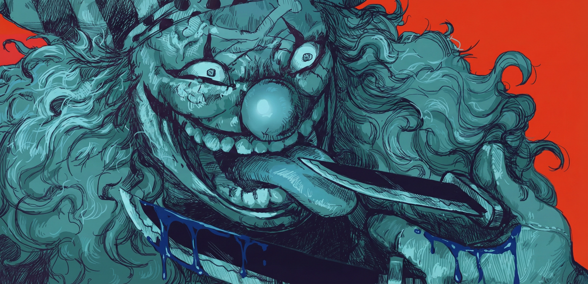

DOSSIER_CONFIDENTIEL // 2026
CIEVEN
ELIO
VIRELLI
DUALITÉ DE L'ÂME
Mon personnage repose sur une dualité stricte et minutieusement travaillée, un contraste absolu entre la lumière publique et les ténèbres de la piraterie.
L'OMBRE
Elio Virelli" Connu sous le nom du "Cavalier Pâle", Elio est le n°2 de l'équipage Most Wanted. C'est un scientifique schizophrène, un artificier de génie et un terroriste persuadé d'être le prophète d'un "Nika" tordu et destructeur, étant "La Chose". Il est sale, voûté, couvert de suie et rongé par ses voix intérieures.
LA LUMIÈRE
Léo River" Identité de couverture parfaite. Pour agir à la vue de tous, Elio a créé "Léo River". Un journaliste d'une propreté clinique, toujours vêtu d'un costume impeccable. Il porte des gants en cuir fin (soi-disant par phobie des microbes, mais en réalité pour cacher ses doigts brûlés par les explosifs) et des lunettes épaisses.
LE CAMOUFLAGE DE LA FOLIE
L'atout majeur de cette couverture est son Escargophone enregistreur. Quand Elio se met à murmurer tout seul ou à se disputer avec ses voix schizophréniques dans la rue, les passants pensent simplement que Léo River est en train de dicter les brouillons de ses futurs articles à son escargophone. Une couverture parfaite pour une folie destructrice.
MOTIVATIONS
CRÉATION DE JEU
// ACCOMPLISSEMENT DU LORE
RP D'INFILTRATION
INÉDIT
Jouer sur la frontière très fine entre le monde civil (la Marine, les citoyens) et le monde de la piraterie. Le rôle de journaliste m'offre le "Pass VIP" ultime pour interagir avec toutes les factions du serveur sans attirer les soupçons immédiats.
LE MAÎTRE
DES SECRETS
Mon but est de fouiller, d'enquêter et de révéler des secrets aux yeux du monde. Du plus petit scandale local au plus grand secret d'État du Gouvernement Mondial.
MANIPULATION
DE L'INFO
En tant que membre du Most Wanted, utiliser la presse pour dicter le narratif. Dénoncer l'incompétence de la Marine lors d'un attentat... qu'il aura lui-même provoqué, ou bien détruire l'image d'un opposant.
OBJECTIFS
L'INFILTRATION
- Intégrer le journal, obtenir ma carte de presse et établir la crédibilité de "Léo River" comme un journaliste neutre, professionnel et digne de confiance auprès de toutes les factions.
- Publier mes premiers articles factuels pour animer le serveur.
LA RÉCOLTE
- Utiliser mon statut pour accéder à des zones restreintes (scènes de crimes, bases de la Marine) pour y récolter des informations cruciales pour le Most Wanted.
- Commencer à glisser de subtiles "prophéties" ou messages codés dans mes articles, annonçant à mots couverts les futures frappes d'Elio.
LE CHAOS
- Devenir une figure médiatique incontournable du serveur (à la manière d'un Morgans), contrôlant le flux d'informations mondiales.
- Déclencher un événement majeur (attentat ou révélation) et le couvrir en direct en tant que journaliste, manipulant l'opinion publique à l'échelle mondiale pour glorifier l'ère du Most Wanted.
EXPÉRIENCES GARRYS MOD
5+ ANS D'expérience RolePlay
EXPERTISE ONE PIECE & NARUTO
J'ai une excellente expérience sur les serveurs One Piece, où j'ai notamment contribué à bâtir plusieurs équipages de manière minutieuse et cohérente, et j'ai un grand nombre de projet. Je dirais qu'une grande partie de mes RP sur le Manga RP a été les One Piece. Je suis un joueur qui aime développer son RP sur la durée. Sur mon dernier serveur Naruto RP, j'ai poussé mon personnage (un Chinoike) jusqu'au rang de Jonin et je suis devenu l'un des Épéistes de la Brume de Kiri.
VÉTÉRAN JOURNALISTE
J'ai déjà occupé le poste de journaliste lors d'un précédent RP One Piece il y a 1 ou 2 ans, j'en connais donc déjà les mécaniques, les attentes et la manière de rédiger des articles immersifs pour la communauté.
ELIO VIRELLI
CAVALIER PÂLE
